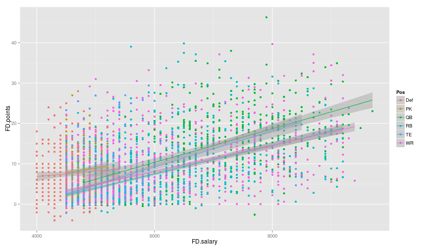

DFS Valuations
With all the hype around daily fantasy sports this year, I figured all the data produced should allow for some interesting analysis. I was able to find weekly FanDuel salaries and points scored on RotoGuru; I wrote a quick script to scrape the data for the 2015 season so far and this is the dataset I'll be using for the analysis here. One obvious metric to look at is the "value" provided by each player, which I define simply as the FanDuel points scored per salary dollar (scaled for readability).
library(ggplot2) library(knitr) library(plyr) groupSummary <- function(df, col) { df.smry <- ddply(df, col, summarise, mean=mean(Value), sd=sd(Value), count=length(Value)) df.smry$sharpe <- df.smry$mean / df.smry$sd df.smry <- df.smry[with(df.smry, order(-sharpe)),] return(df.smry) } df$Value <- 100 * df$FD.points / df$FD.salary knitr::kable(head(df), digits=4, row.names=FALSE, caption="Overview")
| X | Week | Year | GID | Name | Pos | Team | h.a | Oppt | FD.points | FD.salary | Value |
|---|---|---|---|---|---|---|---|---|---|---|---|
| 1 | 1 | 2015 | 1131 | Brady, Tom | QB | nwe | h | pit | 27.62 | 8400 | 0.3288 |
| 2 | 1 | 2015 | 1207 | Palmer, Carson | QB | ari | h | nor | 25.68 | 7700 | 0.3335 |
| 3 | 1 | 2015 | 1466 | Mariota, Marcus | QB | ten | a | tam | 24.96 | 7100 | 0.3515 |
| 4 | 1 | 2015 | 1233 | Romo, Tony | QB | dal | h | nyg | 24.14 | 8700 | 0.2775 |
| 5 | 1 | 2015 | 1254 | Smith, Alex | QB | kan | a | hou | 23.22 | 6600 | 0.3518 |
| 6 | 1 | 2015 | 1252 | Rodgers, Aaron | QB | gnb | a | chi | 23.06 | 9700 | 0.2377 |
Plotting the relationship between salary and points is a good place to start. The points below are colored by position and the best fit line for each position is plotted to highlight any relationships. It is interesting that the slope for QB and TE are the steepest, indicating that salary may be better spent on these positions vs the others.
ggplot(df, aes(x=FD.salary, y=FD.points, colour=Pos)) + geom_point() + stat_smooth(method="lm")

We can summarize the value metric for different groupings to potentially identify other trends. I include an risk-adjusted value metric, which I call 'sharpe' that is clearly inspired by the Sharpe Ratio from the world of finance. Although having a high value would be the most important criteria in DFS, a group having a high sharpe indicates relatively high values given the variation.
The summary of value by position indicates that kickers and quarterbacks provide the "safest" positions in terms of value:
pos.smry <- groupSummary(df, "Pos") knitr::kable(pos.smry, digits=4, row.names=FALSE, caption="Value by Position")
| Pos | mean | sd | count | sharpe |
|---|---|---|---|---|
| PK | 0.1764 | 0.0959 | 313 | 1.8399 |
| QB | 0.2033 | 0.1192 | 378 | 1.7054 |
| Def | 0.1671 | 0.1312 | 320 | 1.2734 |
| WR | 0.1092 | 0.1138 | 1385 | 0.9599 |
| RB | 0.1015 | 0.1124 | 1044 | 0.9031 |
| TE | 0.0824 | 0.1048 | 756 | 0.7855 |
The summary of value by home/away indicates that there is no significant difference between players' performances at home and away:
ha.smry <- groupSummary(df, "h.a") knitr::kable(ha.smry, digits=4, row.names=FALSE, caption="Value by Home/Away")
| h.a | mean | sd | count | sharpe |
|---|---|---|---|---|
| a | 0.1174 | 0.1155 | 2095 | 1.0170 |
| h | 0.1232 | 0.1216 | 2101 | 1.0134 |
The summary of value by team (surprisingly) indicates that players on the Titans provide the best risk-adjusted value. Looking just at the mean value, the Patriots have produced players that produce the most points per fantasy dollar:
team.smry <- groupSummary(df, "Team") knitr::kable(team.smry, digits=4, row.names=FALSE, caption="Value by Team")
| Team | mean | sd | count | sharpe |
|---|---|---|---|---|
| ten | 0.1222 | 0.1049 | 126 | 1.1643 |
| nwe | 0.1416 | 0.1232 | 132 | 1.1497 |
| nyg | 0.1377 | 0.1216 | 124 | 1.1322 |
| det | 0.1217 | 0.1076 | 124 | 1.1307 |
| ind | 0.1234 | 0.1104 | 125 | 1.1172 |
| bal | 0.1243 | 0.1117 | 136 | 1.1128 |
| oak | 0.1273 | 0.1152 | 126 | 1.1056 |
| car | 0.1332 | 0.1223 | 133 | 1.0889 |
| sdg | 0.1219 | 0.1149 | 134 | 1.0611 |
| hou | 0.1279 | 0.1211 | 122 | 1.0556 |
| was | 0.1230 | 0.1173 | 129 | 1.0483 |
| nyj | 0.1146 | 0.1104 | 129 | 1.0381 |
| chi | 0.1213 | 0.1174 | 117 | 1.0330 |
| phi | 0.1143 | 0.1110 | 148 | 1.0297 |
| nor | 0.1215 | 0.1193 | 144 | 1.0187 |
| dal | 0.1084 | 0.1076 | 131 | 1.0077 |
| gnb | 0.1257 | 0.1249 | 124 | 1.0065 |
| buf | 0.1236 | 0.1230 | 129 | 1.0053 |
| jac | 0.1277 | 0.1271 | 116 | 1.0050 |
| cin | 0.1254 | 0.1252 | 132 | 1.0016 |
| den | 0.1117 | 0.1120 | 138 | 0.9976 |
| ari | 0.1336 | 0.1348 | 146 | 0.9909 |
| sea | 0.1143 | 0.1167 | 136 | 0.9790 |
| cle | 0.1244 | 0.1274 | 130 | 0.9761 |
| min | 0.0988 | 0.1021 | 145 | 0.9676 |
| kan | 0.1320 | 0.1373 | 122 | 0.9614 |
| tam | 0.1223 | 0.1296 | 129 | 0.9442 |
| mia | 0.1112 | 0.1190 | 136 | 0.9348 |
| atl | 0.1193 | 0.1282 | 130 | 0.9308 |
| stl | 0.1036 | 0.1147 | 130 | 0.9033 |
| pit | 0.1125 | 0.1270 | 132 | 0.8861 |
| sfo | 0.0893 | 0.1021 | 141 | 0.8739 |
The summary of value by opponent shows that the Colts allow the best risk-adjusted performances and the Texans have forced the worst:
oppt.smry <- groupSummary(df, "Oppt") knitr::kable(oppt.smry, digits=4, row.names=FALSE, caption="Value by Opponent")
| Oppt | mean | sd | count | sharpe |
|---|---|---|---|---|
| ind | 0.1311 | 0.1153 | 133 | 1.1368 |
| det | 0.1237 | 0.1092 | 133 | 1.1330 |
| nwe | 0.1104 | 0.0981 | 128 | 1.1254 |
| car | 0.1134 | 0.1036 | 128 | 1.0938 |
| nor | 0.1473 | 0.1353 | 135 | 1.0885 |
| cle | 0.1383 | 0.1274 | 126 | 1.0854 |
| sdg | 0.1334 | 0.1229 | 126 | 1.0853 |
| phi | 0.1268 | 0.1175 | 131 | 1.0797 |
| jac | 0.1361 | 0.1265 | 127 | 1.0763 |
| nyg | 0.1296 | 0.1228 | 135 | 1.0557 |
| den | 0.1102 | 0.1057 | 126 | 1.0424 |
| pit | 0.1198 | 0.1150 | 128 | 1.0424 |
| min | 0.1100 | 0.1065 | 131 | 1.0326 |
| atl | 0.1156 | 0.1121 | 131 | 1.0310 |
| was | 0.1193 | 0.1185 | 135 | 1.0069 |
| tam | 0.1194 | 0.1194 | 129 | 0.9998 |
| chi | 0.1186 | 0.1186 | 130 | 0.9996 |
| mia | 0.1276 | 0.1280 | 134 | 0.9967 |
| gnb | 0.1094 | 0.1102 | 135 | 0.9929 |
| nyj | 0.1127 | 0.1138 | 127 | 0.9898 |
| kan | 0.1067 | 0.1078 | 134 | 0.9896 |
| dal | 0.1136 | 0.1161 | 136 | 0.9785 |
| sfo | 0.1303 | 0.1336 | 133 | 0.9750 |
| cin | 0.1125 | 0.1158 | 132 | 0.9719 |
| oak | 0.1304 | 0.1343 | 134 | 0.9708 |
| buf | 0.1175 | 0.1217 | 129 | 0.9656 |
| stl | 0.1094 | 0.1139 | 134 | 0.9609 |
| bal | 0.1246 | 0.1310 | 132 | 0.9518 |
| ten | 0.1184 | 0.1244 | 132 | 0.9514 |
| ari | 0.1082 | 0.1138 | 133 | 0.9513 |
| sea | 0.1120 | 0.1188 | 130 | 0.9429 |
| hou | 0.1150 | 0.1262 | 129 | 0.9119 |
The summary of value value by week shows that the worst risk-adjusted performances came early in the season (weeks 1-3):
week.smry <- groupSummary(df, "Week") knitr::kable(week.smry, digits=4, row.names=FALSE, caption="Value by Week")
| Week | mean | sd | count | sharpe |
|---|---|---|---|---|
| 4 | 0.1256 | 0.1177 | 381 | 1.0673 |
| 6 | 0.1256 | 0.1177 | 370 | 1.0663 |
| 11 | 0.1203 | 0.1162 | 361 | 1.0353 |
| 5 | 0.1242 | 0.1203 | 357 | 1.0325 |
| 10 | 0.1140 | 0.1113 | 366 | 1.0238 |
| 7 | 0.1213 | 0.1200 | 369 | 1.0104 |
| 8 | 0.1185 | 0.1177 | 369 | 1.0068 |
| 9 | 0.1235 | 0.1229 | 339 | 1.0055 |
| 2 | 0.1211 | 0.1225 | 418 | 0.9890 |
| 3 | 0.1213 | 0.1247 | 413 | 0.9730 |
| 1 | 0.1106 | 0.1138 | 453 | 0.9719 |
I don't know how much any of this could improve your daily fantasy strategy but it is interesting to break down the relationship between cost (salary) and actual performance. Merging projections into this data would allow for an even more interesting analysis, which I'll look into next.